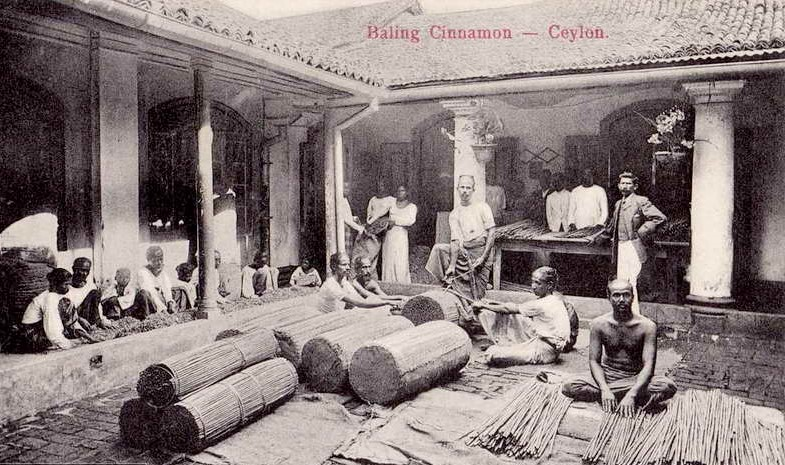

කුරුදු ඉතිහාසය
කුරුඳු යනු මිනිසුන් දන්නා පැරණිතම කුළුබඩු වර්ගයකි. එය එහි රසය, සුවඳ සහ ඖෂධීය ගුණ සඳහා සියවස් ගණනාවක් තිස්සේ භාවිතා කර ඇත. කුරුඳු භාවිතය පිළිබඳ පැරණිතම සාක්ෂිය ක්රිස්තු පූර්ව 2800 දක්වා දිවෙන අතර එය පුරාණ ඊජිප්තු සොහොන් ගෙවල්වලින් හමු විය. පුරාණ ග්රීකයන්, රෝමවරුන් සහ චීන ජාතිකයන් විසින් ද කුරුඳු භාවිතා කරන ලදී.
කුරුඳු වගාව ආරම්භ වුණේ ශ්රී ලංකාවේ මධ්යම කඳුකරයේ බවට සාක්ෂි තිබ්බත් දැනට ගාල්ල, මාතර, රත්නපුර, කළුතර, මාතලේ, බදුල්ල, මහනුවර යන දිස්ත්රික්ක වලත් මේ කුරුඳු බහුලව ව්යාප්තව තියෙනවා. ක්රි.ව. 1273-1284 කාලයේ ලංකාව පාලනය කරපු පළමුවැනි බුවනෙකබාහු රජතුමා විදේශ සබඳතාවක් ඇති කරගන්න ඊජිප්තුවේ සුල්තාන් රජු සමග වෙළෙඳ ගිවිසුමක් අත්සන් කළ අතර ඒ ගිවිසුමේ ප්රධාන අපනයන භෝගය වූයේත් කුරුඳුයි. මෙරට කුරුඳු වෙළෙඳාම අරාබි ජාතිකයින්ගේ ආධිපත්යයට නතුකරගෙන තිබුණු බවටත් සාක්ෂි ඉතිහාසයේ සඳහන් වනවා, කිරින්ද, හම්බන්තොට ආදී වරායන් ආශ්රිතව අරාබි කාසි හා වෙනත් අවශේෂ හමුව තිබීමත් කුරුඳු වගාව අතීතයේ හොඳම අපනයන භෝගයක් වුණු බවට හොඳ සාක්ෂි වනවා
ලංකාව විදේශයන්ට යටත් වෙන්න එක අතකින් මේ කුරුඳුත් හේතුවක්. ලංකාවේ කුරුඳු වලට ලෝකේ හොඳ ඉල්ලුමක් තිබ්බා. ලන්දේසීන් මඩකලපුව අල්ලා ගනිද්දි මඩකලපුවේ කුළුබඩු පිරවූ ගබඩාවක් ඔවුන් විසින් සොයාගනු ලැබුවා.
උඩරට යුගයේ කුරුඳු තලන්නට යොදාගෙන තියෙන්නේ සලාගම කුලයේ උදවියවයි. සෑම සලාගම පිරිමි ළමයෙක්ම අවුරුදු 12 දී කුරුඳු තැලීම ආරම්භ කරන්න ඕනේ. ඒ එක්කම ඒ කාර්යය මහළු විය දක්වාම කළයුතුය කියලා නීතියකුත් ඒ කාලේ තිබිලා තියෙනවා. ඒත් ඒ කාර්යයට ඔවුන්ට හම්බුණේ ගොඩාක් අඩු පඩියක්. ඒ පොඩි සොච්චමෙනුත් තමන්ගේ බදුත් ගන්න තරම් ඉංග්රීසින් කුරිරු වුණා…


අතීතයේ කුරුඳු තලන සලාගම කුලයේ අය